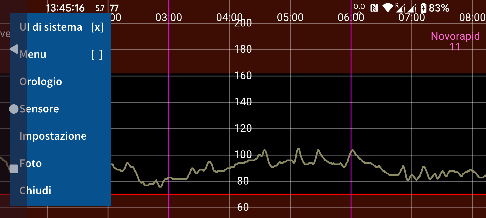
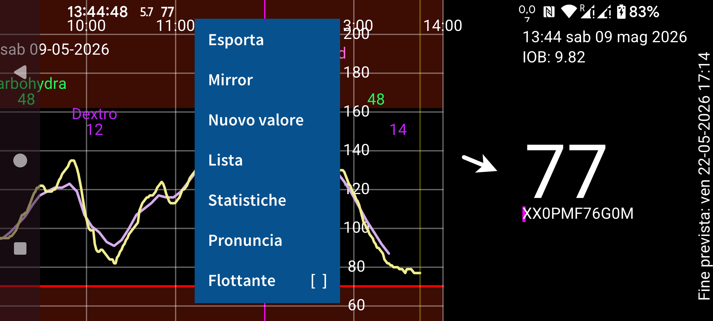
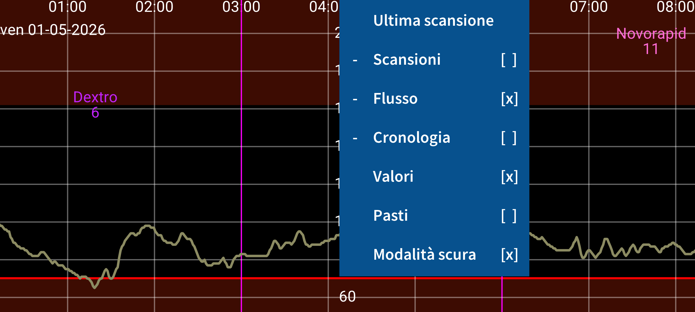
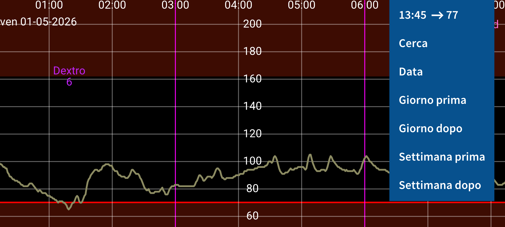

ar be de es fr hi it ja nl pl pt ru tr uk uz zh en
Juggluco è un'app che aiuta le persone con diabete a monitorare e gestire la propria glicemia. Può scansionare sensori Freestyle Libre (0 e 2) (via NFC) e ricevere (via Bluetooth) i valori di glucosio dai sensori Freestyle Libre 2, 2+, 3, 3+, Sibionics GS1Sb e GS3, Dexcom G7/ONE+, Accu-Chek SmartGuide, CareSens Air e Linx/Lumiflex/Aidex X.
Quando il programma viene avviato per la prima volta, puoi scansionare un sensore Freestyle Libre 2 tenendolo contro il sensore NFC del tuo smartphone. Dopodiché, Juggluco proverà a stabilire una connessione Bluetooth con i sensori Freestyle Libre 2 e a ricevere un valore di glucosio ogni minuto, senza ulteriori scansioni. Per prendere in carico un sensore FreeStyle Libre 3 o 3+ attivato con l'app Libre 3 di Abbott, devi specificare le informazioni dell'account Libreview che hai usato per attivare il sensore in Impostazione->Scambio dati->Libreview, premere "Ottieni Account ID" e attendere che l'Account ID arrivi prima di scansionare. Non è possibile prendere in carico un sensore Libre 3 avviato con il lettore FreeStyle Libre 3 o con l'app USA Libre per Libre 2 e Libre 3. Juggluco può anche attivare tutti i sensori menzionati, eccetto possibilmente Accu-Chek SmartGuide.
Per connetterti ai sensori Sibionics GS1Sb, Dexcom G7/ONE+, Accu-Chek SmartGuide, CareSens Air o Linx/Lumiflex/Aidex X devi scansionarne la data matrix con menu sinistro->Foto. I sensori Dexcom G7/ONE+ vengono accoppiati via Bluetooth. Sulla maggior parte dei telefoni devi confermare il prompt di accoppiamento, e devi farlo rapidamente — altrimenti dovrai aspettare altri 5 minuti. Tieni lo schermo acceso mentre aspetti. Su Samsung Galaxy Watch 4 e 7 non è necessario acconsentire all'accoppiamento. I sensori Dexcom G7/ONE+ scaduti rimangono raggiungibili via Bluetooth per molto tempo dopo che hanno smesso di registrare valori di glucosio. Per evitare che Juggluco cerchi di accoppiarsi con il sensore sbagliato, tieni i vecchi sensori fuori dalla portata del Bluetooth (per esempio a 15 metri di distanza, nel microonde o in una gabbia di Faraday), specialmente quando un vecchio sensore ha lo stesso pincode del nuovo. Disattiva (forza l'arresto o disinstalla) le app e i dispositivi che si erano connessi in precedenza con il sensore. Quando si accoppiano i sensori Accu-Chek SmartGuide devi inserire un PIN.
Per avviare un sensore Sibionics GS3 con Juggluco, scansiona la data matrix sulla confezione, oppure scansiona il sensore stesso via NFC. Apparirà quindi una schermata in cui devi inserire un ID. Se il sensore è stato già usato con l'app Sibionics GS3 oppure se vuoi poter usare quell'app più tardi, devi inserire l'indirizzo e-mail e la password che hai usato con l'app Sibionics GS3 e recuperare l'account ID dal server. Se hai un nuovo sensore e vuoi usarlo solo con Juggluco, puoi inserire un numero arbitrario.
Vedi https://www.juggluco.nl/Juggluco/sensors per ulteriori informazioni sulla connessione ai sensori.
Il programma contiene quattro menu; toccando una parte vuota del display puoi aprire un menu. Toccando il quarto sinistro dello schermo apri il menu sinistro; toccando la metà sinistra dell'area centrale apri il secondo menu; toccando la metà destra dell'area centrale apri il terzo menu; e toccando il quarto destro apri il quarto menu.
Menu 4: Movimento (destra)
15:10 ↗ 93
Cerca
Data
Giorno prima
Giorno dopo
Settimana prima
Settimana dopo
Muovendoti a destra e sinistra sullo schermo puoi spostare la curva a destra e sinistra. Puoi muoverti anche usando il menu movimento a destra. Usa Data per selezionare una data, Cerca per cercare valori di glucosio e numeri inseriti. Il primo elemento del menu di destra è l'ora corrente e selezionandolo passi a destra del grafico (ora).
Se scala manuale Glucosio è impostato in Impostazione, muovendoti su e giù nella parte superiore dello schermo cambi il massimo del grafico, nella parte inferiore dello schermo cambi il minimo. Se Scala manuale del tempo è impostato in impostazione, puoi aumentare o diminuire la quantità di tempo visualizzata sullo schermo cambiando la distanza tra due dita.
Menu 3: Display
Ultima scansione
Scansioni [x]
Flusso [x]
Cronologia [x]
Valori [x]
Pasti [ ]
Modalità scura [x]
La parte destra del menu centrale contiene opzioni di visualizzazione. Per vedere l'ultima scansione, tocca il primo elemento. Una crocetta dopo Scansioni significa che le scansioni vengono mostrate nel grafico. Una scansione è il valore corrente di glucosio che ottieni quando scansioni un sensore Libre 0 o 2 via NFC. La scansione trasferisce anche i valori di cronologia ogni 15 minuti delle ultime 8 ore dal sensore al telefono. La visualizzazione di questi valori può essere controllata toccando Cronologia. I sensori Libre 3 inviano i valori di cronologia via Bluetooth ogni 5 minuti. "Flusso" indica i valori di glucosio inviati ogni minuto via Bluetooth dai sensori FreeStyle Libre 2 e 3 a quest'app.
Puoi inserire ogni tipo di numero, con qualsiasi etichetta tu voglia, per registrare la tua insulina, i carboidrati e le attività. Vengono visualizzati a un'altezza fissa nel grafico del glucosio alla data e ora specificate. Toccando i punti nel grafico o un numero inserito si ottengono informazioni su quell'elemento. Puoi modificare un numero inserito tenendolo premuto a lungo. La modifica è possibile anche tramite la lista numeri nel menu centrale sinistro e toccando l'elemento di dato corrispondente. Valori determina la visualizzazione dei numeri inseriti. In Impostazione, puoi specificare quali etichette vorresti usare per questi numeri. Sopra uno dei numeri viene mostrata l'etichetta corrispondente.
Menu 2: Centrale sinistro
Esporta
Mirror
Nuovo valore
Lista
Statistiche
Pronuncia
Flottante [ ]
Puoi inserire questi numeri toccando Nuovo valore nel menu centrale sinistro. Esporta salva i dati in formato .tsv (tab separated values) in un file. Mirror rende possibile inviare dati via IP/TCP a quest'app in esecuzione su un altro dispositivo per mostrare le stesse informazioni. Lista fornisce una lista dei numeri inseriti. Se Juggluco ha ricevuto abbastanza valori di glucosio via Bluetooth, puoi vedere alcune statistiche toccando Statistiche. Mostra la percentuale delle misurazioni in determinati range di glucosio, il Glucose Management Indicator (un predittore di HbA1c), la variabilità del glucosio e un grafico riassuntivo che mostra il valore di glucosio sotto al quale si trova lo 0%, 5%, 25%, 50%, 75%, 95% e 100% dei valori in ogni minuto della giornata. In Pronuncia puoi far pronunciare a Juggluco i valori di glucosio in arrivo, gli elementi toccati del grafico o i messaggi. Flottante attiva il Glucosio Flottante. Un valore di glucosio presente sullo schermo sopra le altre app. In Impostazione puoi cambiarne colore e dimensione.
Menu 1: Sinistro
UI di sistema [ ]
Menu [ ]
Orologio
Sensore
Impostazione
Foto
Chiudi
Nel menu sinistro, puoi trovare Impostazione, per impostare l'unità del glucosio in mmol/L o mg/dL, specificare etichette, impostare allarmi del glucosio e promemoria medicinali e range di visualizzazione. UI di sistema determina se i controlli e la barra di stato di Android sono mostrati. In Orologio puoi configurare Juggluco per inviare dati a vari smartwatch. In Sensore, puoi vedere come sta andando la connessione con il sensore. Tocca Menu per mostrare tutti i quattro menu insieme in un layout che TalkBack può leggere ad alta voce. Chiudi può essere usato per uscire da Juggluco.